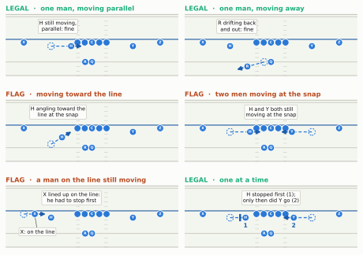
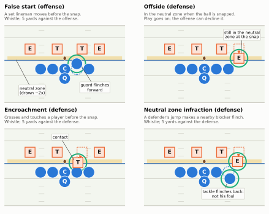
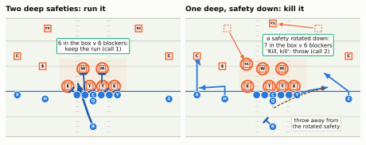
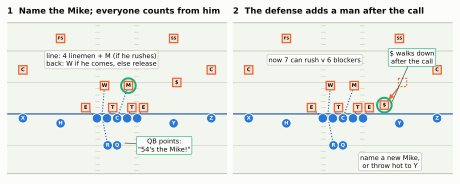
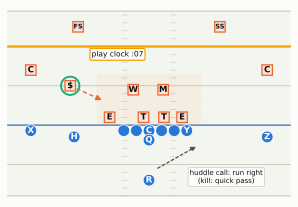
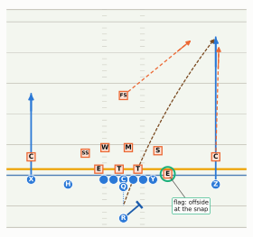

Shifts, motion, cadence and audibles: what both teams do in the last fifteen seconds before the ball moves, and why every bit of it is a fight over information.
Show the Python (shared drawing helpers for this chapter)
import loggingimport osimport shutilimport numpy as npimport pandas as pdimport matplotlib.pyplot as pltfrom matplotlib.patches import Rectangle, Ellipse, Circle, RegularPolygon, FancyArrowPatchfrom IPython.display import HTML, displayfrom gridiron import Play, Player, offense, defense, routes as r, style, frame_stripfrom gridiron.animate import animatefrom gridiron.field import FIELD_WIDTHlogging.getLogger("matplotlib.font_manager").setLevel(logging.ERROR)style.apply()PDF = os.environ.get("RTG_FORMAT", "").lower() in ("pdf", "typst", "print")GOOD, BAD = style.THIRD, style.DEFENSE_DARKdef dashed_motion(p, key, to, head=0.5):"""Pre-snap motion to the spot `to` (absolute d, w), drawn dashed with a short solid head. (gridiron draws the last part of a path's final segment solid, so one long segment would look like a route.)""" d0, w0 = p._cur(key) dd, dw = to[0] - d0, to[1] - w0 f =max(0.0, 1- head /float(np.hypot(dd, dw))) p.motion(key, pts=[(dd * f, dw * f), (dd, dw)])def schedule(p, plan):"""Re-time pre-snap movement. plan = {key: (t_start, t_end)}, seconds before the snap. gridiron runs every pre-snap motion so that it ends exactly at the snap. A shift has to finish early, and then everyone holds the one-second set, so this stretches each listed player's pre-snap path into his window and holds him still until the snap. (Implemented here rather than in gridiron; call it after every action has been added.)""" kf, t0, t1 = p._compile()for key, (a, b) in plan.items(): arr = kf[key] pre, post = arr[arr[:, 0] <=1e-9], arr[arr[:, 0] >1e-9] T0, T1 = pre[0, 0], pre[-1, 0] new = pre.copy() new[:, 0] = a + (pre[:, 0] - T0) / ((T1 - T0) or1.0) * (b - a) rows = [new] + ([np.array([[0.0, *new[-1, 1:]]])] if b <0else []) + [post] kf[key] = np.vstack(rows) p._compiled = (kf, min(float(f[0, 0]) for f in kf.values()), t1)return pdef strip_labels(fig, labels, loc=(0.03, 0.04)):"""A short caption in the bottom-left of each frame-strip panel (behind the offense, where the field is usually empty)."""for ax, lab inzip(fig.axes, labels):if lab: ax.text(*loc, lab, transform=ax.transAxes, ha="left", va="bottom", fontsize=7.2, color=style.INK, zorder=20, linespacing=1.15, bbox=dict(boxstyle="round,pad=0.25", fc=style.SURFACE, ec=style.BASELINE, lw=0.6))def strip_P(p):"""(d, w) in the play's frame -> plot coordinates of a vertical frame-strip panel."""returnlambda d, w: (float(FIELD_WIDTH - (p.ball_y - w)), float(p.los + d))def labelled_animation(p, times, labeler, tags=None, numbers=True):"""Like gridiron.show_animation, plus a caption that changes with the phase of the play. `labeler(t)` returns the caption at t seconds from the snap. PDF: a labelled frame strip; `tags` is one list per panel of (text, at, to) on-field labels, to=None for no leader line."""if PDF: fig = frame_strip(p, times=times, to_go=p.to_go) strip_labels(fig, [labeler(t) for t in times]) P = strip_P(p)for ax, items inzip(fig.axes, tags or []):ifnot numbers: drop_numbers(ax)for text, at, to in items:if to isNone: tag(ax, P(*at), text)else: callout(ax, P, text, at, to)ifnot numbers andnot tags:for ax in fig.axes: drop_numbers(ax) plt.show()return df = p.to_tracking() tmap = df.groupby("frameId")["time"].first() anim = animate(df, to_go=p.to_go) ax = anim._fig.axes[0] cap = ax.text(0.01, 0.02, "", transform=ax.transAxes, ha="left", va="bottom", fontsize=9, color=style.INK, zorder=21, bbox=dict(boxstyle="round,pad=0.3", fc=style.SURFACE, ec=style.THIRD, lw=1.0)) base = anim._funcdef upd(fid, *a): out = base(fid, *a) cap.set_text(labeler(float(tmap.get(fid, 0.0))))return out anim._func = updif shutil.which("ffmpeg"): html = anim.to_html5_video(embed_limit=40).replace("<video ", '<video style="max-width:100%;height:auto" ')else: html = anim.to_jshtml(default_mode="once") plt.close(anim._fig) display(HTML(html))def P_of(fld, p):"""(d, w) in the play's frame -> plot coordinates on this field."""returnlambda d, w: tuple(float(v) for v in fld.xy(*p.to_abs(d, w)))def tag(ax, xy, text, ec=style.BASELINE, fs=6.6, lw=0.6): ax.text(*xy, text, fontsize=fs, color=style.INK, ha="center", va="center", zorder=12, linespacing=1.15, bbox=dict(boxstyle="round,pad=0.22", fc=style.SURFACE, ec=ec, lw=lw))def callout(ax, P, text, at, to, fs=6.6, ec=style.BASELINE):"""A label at `at` with a thin leader line to `to` (both (d, w)).""" ax.annotate(text, xy=P(*to), xytext=P(*at), fontsize=fs, color=style.INK, ha="center", va="center", zorder=12, linespacing=1.15, bbox=dict(boxstyle="round,pad=0.22", fc=style.SURFACE, ec=ec, lw=0.6), arrowprops=dict(arrowstyle="-", color=style.INK_2, lw=0.7, shrinkA=0, shrinkB=4))def drop_numbers(ax):"""Remove the painted yard numbers (in a tight zoom they sit outside the field)."""for t inlist(ax.texts):if t.get_text().isdigit(): t.remove()def ghost(ax, P, d, w, side, to=None, rad=0.75):"""A dashed outline where a player WAS, with an arrow to where he is now (`to`=(d, w)).""" x, y = P(d, w) col = style.OFFENSE if side =="off"else style.DEFENSEif side =="off": pat = Circle((x, y), rad, fc="none", ec=col, lw=1.0, ls=(0, (2, 1.5)), zorder=7)else: pat = RegularPolygon((x, y), 4, radius=rad *1.25, orientation=np.pi /4, fc="none", ec=col, lw=1.0, ls=(0, (2, 1.5)), zorder=7) ax.add_patch(pat)if to isnotNone: ax.add_patch(FancyArrowPatch((x, y), P(*to), arrowstyle="-|>", mutation_scale=9, color=col, lw=1.2, shrinkA=7, shrinkB=7, zorder=9))def duty(ax, P, pts, color=style.OFFENSE_DARK):"""A dotted 'responsibility' leader through (d, w) points: who a blocker has, not where he runs.""" xs, ys =zip(*[P(*q) for q in pts]) ax.plot(xs, ys, color=color, lw=1.1, ls=(0, (1, 1.6)), zorder=4.5)
Second-and-7. The offense breaks the huddle and walks to the line, and for a few seconds nothing happens. Then the tight end jogs from the right side of the formation to the left, two receivers step into new spots at the same moment, and everyone freezes. A receiver starts trotting across the formation. On the other side a safety who was fifteen yards deep creeps down toward the line, and a linebacker walks up and stands nose to nose with the center. The quarterback points at the linebacker, shouts a number, then barks “Kill! Kill!” and a word that sounds like a city. Two seconds later the right tackle flinches and a yellow flag flies. None of that is filler. Every movement in those fifteen seconds is one side asking the other a question, or trying not to answer one. This chapter names every piece of it, explains why each exists, and, near the end of the fouls section, tells you whose flag that was.
You’ll be able to…
Say whether a pre-snap movement is a shift or motion, and spot the illegal ones (two men moving at the snap, a man moving toward the line, no one-second set after a shift).
Explain cadence, hard counts and silent counts, tell the four pre-snap fouls apart (false start, offside, encroachment, neutral zone infraction), and say which fouls stop the play and which let it run.
Tell an audible, a check, a kill call and a check-with-me system apart, and spot the signs that a quarterback is changing the play.
Explain why the quarterback or center points at a linebacker before the snap.
Recognise the defense’s own pre-snap moves (a front shifting, a safety walking down, a linebacker showing blitz) and say what each might mean, including that it might be a bluff.
List what each side is trying to learn before the ball moves.
Fifteen seconds of questions
In What a Play Really Is we followed the play call from the coach’s sheet to the huddle, and stopped where the radio goes dead: 15 seconds left on the play clock. From that moment no coach can talk to any player by radio.1 Coaches can still wave and signal from the sideline, but the decisions that remain are mostly the players’. An offense that huddles spends most of what is left of the play clock at the line, and the quarterback decides when that time ends: the huddle fixed which sound the ball comes on, but he chooses when to start calling it.
Why not snap the ball the instant everyone is lined up? Because both teams know something the other wants to know. The offense knows its play and exactly when the ball will be snapped. The defense knows its coverage, whether anyone extra is coming after the quarterback, and how it will adjust to what the offense shows. Neither side can see the other’s call. The seconds before the snap are the only time each side can look at the other before committing, so both use them, the offense to make the defense show its hand and the defense to hide it.
The tools come in four families, and the rest of the chapter takes them one at a time:
Movement (set, shift, motion), and the rules that keep it fair.
Sound (cadence, hard counts, silent counts), and the fouls it draws.
Changing the play (audibles, checks, kill calls, check-with-me), plus naming the Mike linebacker so that everyone blocks the same men.
The defense’s reply: shifting, walking safeties down, showing blitz, and bluffing.
Set: why everyone has to freeze
Every snap starts from stillness. After the huddle breaks and the players reach their spots, all eleven offensive players must be stationary at the same moment, and they have to stay that way for at least one full second. That moment is called the set: the moment when all eleven offensive players are still at the same time.2 Interior linemen (tackle to tackle) who have put a hand on the ground are now locked in place. If one lifts or moves that hand, it’s a foul (more below).
Why insist on stillness? The answer is about a hundred years old. In the 1910s and 1920s, offenses discovered that a backfield moving just before the snap had a running start at the defense. The most famous version was Knute Rockne’s at Notre Dame. His backs lined up in a T (the quarterback right behind the center and three backs side by side behind him), then hopped together into a “box” to one side just as the ball was snapped, so the play started with four men already moving and the defense reacting a beat late.3 It worked so well that the rule makers went after it, and Notre Dame’s own alumni magazine admitted in 1927 that the new shift rules had probably hit Notre Dame “hardest of all.”4 The college rules committee’s report for 1927 said that after a shift “the players should remain stationary in their new positions for a period of approximately one second,” and raised the penalty for an illegal shift from five yards to fifteen.5 The one-second set in today’s NFL rulebook is that same principle: you may move as much as you like before the snap, but the play has to start from a standstill, so the offense’s knowledge of the snap count gives it a head start of a fraction of a second, not a running start. There is one carefully fenced exception, a single player moving sideways or backward, and it gets its own section below.
The set also does a quieter job: it gives the officials (and the defense) one stable picture to check. With everyone still, the officials can count seven players on the line and confirm that only the end men on the line and the backs are eligible to catch a pass (the rules of a legal formation are in Formation Rules and the Language of Alignment). The defense gets the same picture, which is why so much of the offense’s pre-snap work is about changing it.
Shift: changing the picture
A shift is two or more offensive players changing position (or stance) at the same time before the snap. The rulebook’s definition even counts the whole offense walking up to the line out of the huddle as a shift. An offense may shift as many times as it likes. The one rule that matters: after the last shift, all eleven must be set together for at least one full second before the snap. Snap it sooner and it’s an illegal shift: five yards, although, as you’ll see in the fouls section, the flag doesn’t stop the play.6
Here is a typical one, which coaches call a tight end trade (a trade). The offense breaks the huddle with its tight end (Y) attached to the right side of the line. Then, at the same moment, Y runs behind the line to the left side, the receiver on the left (X) steps back off the line, and the receiver on the right (Z) steps up onto it. Three players moved together, so it’s a shift. Two receivers, X and the slot receiver H, were already on the left; now Y joins them, so the offense goes from two receivers on each side to three on the left (with the tight end attached) and one, Z, alone on the right.
Show the Python
def shift_play(): off = offense("singleback") off = [q.moved(d=-1.5, w=-10.0) if q.key =="H"else q for q in off] # slot receiver off the ball after = {"Y": (-0.7, -4.8), "X": (-1.5, -15.0), "Z": (-0.7, 15.0)} off_after = [q.moved(d=after[q.key][0], w=after[q.key][1]) if q.key in after else q for q in off] d0 = defense("4-3_over", "single_high", off) # strength called to the tight end d1 = {q.key: q for q in defense("4-3_over", "single_high", off_after)} p = Play(off, d0, los=40, to_go=10) p.motion("Y", pts=[(-2.6, -1.0), (-2.6, -9.0), (0.0, -9.6)]) # well behind the QB, then up beside the LT p.motion("X", to=after["X"]) p.motion("Z", to=after["Z"]) plan = {"Y": (-3.8, -2.2), "X": (-3.4, -2.6), "Z": (-3.4, -2.6)}# the defense re-sets to the new strength. Linemen each slide to the nearest new spot (left to# right, so nobody crosses); linebackers and the strong safety keep their roles and cross over,# the Sam looping in front of the others. dl =sorted([q for q in d0 if q.pos in ("DE", "DT")], key=lambda q: q.w) dl_to =sorted([d1[q.key] for q in dl], key=lambda q: q.w) targets = {q.key: (t.d, t.w) for q, t inzip(dl, dl_to)} targets.update({k: (d1[k].d, d1[k].w) for k in ("MIKE", "WILL", "SS")})for k, to in targets.items():if k =="SS": p.motion(k, to=to)else: dashed_motion(p, k, to, head=0.3) sam, sam_to = p.players["SAM"], d1["SAM"] p.motion("SAM", pts=[(-1.0, -2.0), (-1.0, sam_to.w - sam.w +2.0), (sam_to.d - sam.d, sam_to.w - sam.w)])for k inlist(targets) + ["SAM"]: plan[k] = (-3.0, -1.0) plan["WILL"] = (-3.1, -1.6) # the Will crosses first, clear of the Mike p.run("RB", [(-0.5, -3.0), (4.0, -6.5)]) # after the snap: the run goes to the new strength p.handoff("RB", t=0.6)return schedule(p, plan)def shift_phase(t):if t <-3.8:return"set: tight end on the right"if t <-2.2:return"shift: Y crosses; X and Z step"if t <-1.0:return"offense set again;\ndefense still flipping"if t <-1e-6:return"everyone set: at least 1 full second"return"snap: 3 receivers left, 1 right"SHIFT = shift_play()SHIFT_TAGS = [ [], [("Y crosses behind\nthe quarterback", (-4.6, 8.0), tuple(SHIFT.position("Y", -2.7)))], [("X stepped back\noff the line", (-3.6, -11.0), (-1.5, -15.0)), ("Z stepped up\nonto the line", (-3.6, 11.0), (-0.7, 15.0))], [("S and SS have\ncrossed to the left", (10.2, -3.0), (7.0, -6.0))],]labelled_animation(SHIFT, [-4.2, -2.7, -1.4, 0.0], shift_phase, tags=SHIFT_TAGS)
Figure 7.1: A tight end trade: a shift and the one-second set (simulated tracking in Big Data Bowl format; the Big Data Bowl is the NFL’s public player-tracking dataset, which you’ll load yourself in Part 13). The offense lines up with the tight end (Y) on the right. Then Y runs behind the line to the left while X steps off the line and Z steps onto it, a yard’s move each that the tags point out: three players at once, so it’s a shift, and the strength moves to the left. The defense has to flip with it: the linemen slide over, and the Sam linebacker (S) and the strong safety (SS) cross to the new side. The offense is set again well before the snap and holds it for over a second, as the rules require, while the defense is still moving. Faint trails show where each player came from.
Why do X and Z move at all? Go back to the eligibility rule from The Twenty-Two: only the players at the two ends of the line may catch a pass, and a player on the line with a teammate outside him is covered and ineligible. If Y attached himself beside the left tackle while X stayed on the line outside him, Y would be covered. And with Y gone from the right and Z standing off the line, the right end of the line would be the right tackle, and the offense would have only six men on the line. So X steps off (uncovering Y) and Z steps on (making seven, and giving the right side an end). Everyone’s one-yard step is there to keep the formation legal.
Why would an offense go to the trouble? Watch what the defense had to do. Defenses set their front toward the offense’s strength, usually the side with the tight end, because the tight end is an extra blocker: a run to his side has one more man to block with, so the defense puts one more man there. When the tight end moved, the strength moved, and the defense had to re-declare: linemen slid over, linebackers crossed, the strong safety walked to the other side. (Not every defense moves its people. Some just swap names, so the linebacker already on the new strong side becomes the Sam; either way everyone has a new job.) A shift buys the offense four things:
A late picture. The defense has to make its adjustment in the two or three seconds before the snap instead of the ten seconds it had. Rushed adjustments are where mistakes happen: two defenders take the same man, one gap is left empty.
Information.How the defense adjusts is a clue. If the linebackers flip but the safeties don’t, that tells the quarterback something about the coverage. If one cornerback runs across the field with a receiver, that’s a different clue (we’ll get to motion in a moment).
A matchup. Shifting the tight end can put him across from a smaller defender, or move the strength toward the side of the field the play is aimed at.
A disguise of its own. The formation the defense studied all week, with its tendencies (“from this look they run left 70% of the time”), may not be the formation the play is run from.
What does it cost? Time, mostly: a shift spends three or four seconds of the play clock and a full second of standing still. It asks every player who moves to know his job from two alignments. And it gives the defense a few seconds of its own to adjust. Teams that shift a lot accept those costs because the information is worth more.
Motion: one man moving at the snap
Motion is one offensive player moving before the snap. Unlike a shift, motion can still be going on when the ball is snapped, which is what makes it useful.
Wait: didn’t the last section say the play has to start from a standstill? This is the fenced exception. The rule makers of the 1920s didn’t ban movement at the snap outright; they banned the dangerous kind, a group of men running at the defense. What survived is a compromise, and each of its rules closes one door:7
Only one player may be moving at the snap. Everyone else must be still. Why: two or more is the Notre Dame box again, a whole backfield with a running start.
He may move parallel to or away from the line of scrimmage, never toward it. Why: a man running toward the line at the snap is exactly the running start at the defense that the set rule exists to stop. Sideways or backward, his head start doesn’t carry him into anyone.
He must have lined up in the backfield, not as one of the seven on the line. “Backfield” here means anyone even a yard behind the line, which includes the slot receiver and the Z a yard off it, not just the running backs. A player on the line, including a tight end in his stance, may slide to a new spot along the line, but he must stop before the snap. Why: the men on the line are inches from the defenders, so a lineman or end moving at the snap would be a running start straight into his opponent; and the officials need the seven on the line, and so who is eligible, fixed at the snap.
Players can go in motion one after another, as long as the first one has stopped before the next one starts. If two are moving at the same time, that’s a shift, and everyone has to reset for a full second. Once that one-second set after a shift is complete, a player can go in motion straight away; there’s no second wait. That’s the most common sequence on TV: a shift, a freeze, then one man in motion.
Breaking any of these is illegal motion, five yards (or an illegal shift, if the problem was two men moving or no one-second set). Other codes draw these lines elsewhere; Canadian football is far looser, and Motion and Shifts as Weapons compares them. Here are the NFL’s cases side by side.
Show the Python
LAT_M, WIN_M = (-18.5, 18.5), (-8.0, 5.5)def pose(p, key, start, now, heading=None):"""Put `key` where he is at the snap (`now`), having started at `start`. heading=(dd, dw): still moving that way at the snap (drawn as an arrow); None: he had stopped (a bar).""" p.players[key] = p.players[key].moved(d=now[0], w=now[1])return start, now, headingdef draw_pose(ax, P, start, now, heading): ghost(ax, P, *start, "off") (x0, y0), (x1, y1) = P(*start), P(*now) ax.plot([x0, x1], [y0, y1], color=style.OFFENSE, lw=1.3, ls=(0, (3, 2)), zorder=4)if heading isnotNone: u = np.array(heading, float) / np.hypot(*heading) ax.add_patch(FancyArrowPatch((x1, y1), P(now[0] +2.4* u[0], now[1] +2.4* u[1]), arrowstyle="-|>", mutation_scale=10, color=style.OFFENSE_DARK, lw=1.8, shrinkA=6, shrinkB=0, zorder=9))else: v = np.array([x1 - x0, y1 - y0]) / np.hypot(x1 - x0, y1 - y0) c, n = np.array([x1, y1]) - v *1.2, np.array([-v[1], v[0]]) *0.8 ax.plot([c[0] - n[0], c[0] + n[0]], [c[1] - n[1], c[1] + n[1]], color=style.OFFENSE_DARK, lw=2.4, solid_capstyle="butt", zorder=9)def m_parallel(p):return (True, "one man, moving parallel", [pose(p, "H", (-1.5, -9.0), (-1.5, -4.6), (0, 1))], [("H still moving,\nparallel: fine", (2.9, -7.5), None)])def m_away(p):return (True, "one man, moving away", [pose(p, "RB", (-5.0, -1.5), (-6.0, -5.2), (-0.3, -1))], [("R drifting back\nand out: fine", (2.9, -7.5), None)])def m_forward(p):return (False, "moving toward the line", [pose(p, "H", (-4.2, -9.0), (-2.7, -6.6), (0.6, 1))], [("H angling toward the\nline at the snap", (2.9, -7.5), None)])def m_two(p):return (False, "two men moving at the snap", [pose(p, "H", (-1.5, -9.0), (-1.5, -4.6), (0, 1)), pose(p, "Y", (-1.5, 9.0), (-1.5, 4.6), (0, -1))], [("H and Y both still\nmoving at the snap", (2.9, 0.0), None)])def m_online(p):return (False, "a man on the line still moving", [pose(p, "X", (-0.7, -15.0), (-0.7, -12.6), (0, 1))], [("X lined up on the line:\nhe had to stop first", (2.9, -4.5), None), ("X: on the line", (-4.6, -12.0), (-0.9, -12.6))])def m_sequence(p):return (True, "one at a time", [pose(p, "H", (-1.5, -9.0), (-1.5, -5.6), None), pose(p, "Y", (-1.5, 9.0), (-1.5, 5.0), (0, -1))], [("H stopped first (1);\nonly then did Y go (2)", (2.9, 0.0), None), ("1", (-3.3, -5.6), None), ("2", (-3.3, 5.0), None)])fig, axes = plt.subplots(3, 2, figsize=(6.5, 4.9))for ax, fn inzip(axes.flat, [m_parallel, m_away, m_forward, m_two, m_online, m_sequence]): p = Play(offense("gun_2x2"), None, los=45, to_go=None) legal, txt, poses, notes = fn(p) fld = p.draw(ax=ax, title=False, lateral=LAT_M, window=WIN_M) P = P_of(fld, p) drop_numbers(ax)for ps in poses: draw_pose(ax, P, *ps)for note, at, to in notes:if to isnotNone: callout(ax, P, note, at, to)eliflen(note) ==1: ax.text(*P(*at), note, fontsize=7.5, fontweight="bold", color=style.OFFENSE_DARK, ha="center", va="center", zorder=12)else: tag(ax, P(*at), note) ax.set_title(f"{'LEGAL'if legal else'FLAG'} · {txt}", loc="left", fontsize=8.3, color=GOOD if legal else BAD, fontweight="bold", pad=2)fig.tight_layout(h_pad=0.5, w_pad=0.8)plt.show()

Figure 7.2: Legal and illegal motion at the moment of the snap, offense only. Each solid dot is where the player is when the ball is snapped; the dashed outline is where he started. An arrow means he is still moving at the snap; a bar means he had stopped. Legal: one backfield player still moving across the formation, or drifting back and away from the line, or two players moving one after the other with the first stopped before the second starts. Flags: a man angling toward the line at the snap, two men moving at once, and a receiver who lined up on the line (X, level with the linemen) still moving at the snap.
CautionCommon misconception
“He was running full speed at the snap, so that must be illegal.” It isn’t. Speed doesn’t matter; direction does. A receiver sprinting across the formation parallel to the line, the jet motion you’ll see many times a game, is perfectly legal as long as he isn’t angling toward the line when the ball is snapped. He turns upfield a split second after the snap. The opposite mistake is common too: a receiver who simply takes one step forward from a set position on the line hasn’t gone “in motion”; he has committed a false start.
Why motion exists
Motion is the single most-used pre-snap tool in today’s NFL, and it does three jobs.
It asks the defense a question. When a receiver runs across the formation, someone on the defense has to deal with him. If one defender runs across with him, step for step, that is a strong hint the defense is playing man coverage, with each defender assigned to follow one receiver. If nobody follows and the defenders just shuffle their spacing, that hints at zone coverage, with each defender guarding an area. Neither hint is a guarantee. Defenses know you’re watching, and many man-coverage defenses now bump instead: the defenders slide one spot over and swap receivers, so nobody runs across and “nobody followed” no longer reliably means zone. The full reading guide is in Motion and Shifts as Weapons. But the quarterback now knows more than he did, and he can change the play if he doesn’t like the answer.
It gives a player a running start, sideways. A man moving at the snap is already at speed when the play begins. That makes him hard to press (to hit and slow at the line, as a cornerback standing nose to nose with a receiver tries to do), lets him reach the edge of the defense faster on a run to the outside, and lets him arrive as a blocker with momentum. Timing the motion so the player is at a particular spot exactly at the snap is a growing art of its own.
It changes the formation late. Just as with a shift, a man in motion can move the formation’s strength, create a crowd of receivers on one side, or put a receiver next to the ball where he can block. The defense has to adjust in the last second or two.
The trade-offs: motion takes time off the play clock; the man in motion can sometimes tip the play (if he always goes in motion before a run to his side, a good defense notices); and he must time it, because arriving early means stopping and waiting, and arriving late means the quarterback holds the snap and the defense gets more time to sort itself out.
A short history: from the T to everyone
Motion is old. George Halas’s Chicago Bears, with extra coaching from Stanford’s Clark Shaughnessy, ran the T formation with a man in motion and beat Washington 73–0 in the 1940 NFL Championship Game. The game made the man-in-motion T famous, and the T swept through college and pro football: by 1953, when the Pittsburgh Steelers gave up the single wing (an older formation in which the center snapped the ball through the air to a back standing several yards deep), every NFL team ran it.8 For most of the next seventy years, though, motion was a sometimes thing: a tool for certain plays, not a habit.
That changed fast. According to Pro Football Focus, NFL offenses used a shift or motion on 38.4% of plays in 2016 and 63.9% in 2025, a record, and every team except the Giants moved before at least half its snaps in 2025.9 (Different charting services define motion differently, so the exact numbers depend on the source; the direction doesn’t.) The reasons are the three jobs above. Defenses have become better at disguising coverage, so offenses need ways to make them reveal it, and the Shanahan and McVay offenses showed how much a running start adds to both runs and passes.
Here is a surprising consequence. All that extra movement barely shows up in the penalty counts. The rules are simple and the motions are rehearsed hundreds of times in practice.
Figure 7.3: More motion, no more motion fouls. Left: the share of plays with a shift or motion before the snap, from PFF’s charting (no 2017 figure in the published series). Right: accepted illegal-shift and illegal-motion penalties per team per game, NFL regular seasons 2016–2025, with false starts in grey for scale. Motion use rose by two-thirds; the fouls it could cause stayed at about one every dozen games per team. Sources: PFF; nflverse play-by-play.
A typical team commits an illegal shift or illegal motion about once every dozen games (anywhere from once in 7 to once in 18, depending on the season).10 False starts, by contrast, happen about once a game per team, and they drifted up in 2024 and 2025. Those come from the second family of pre-snap tools: sound.
Cadence: the offense’s one sure advantage
In a football play, one team knows exactly when it will start and the other doesn’t. The cadence, also called the snap count, is the set of words the quarterback calls at the line and the agreed signal on which the center snaps the ball.
A traditional cadence from under center sounds something like “Blue 80! Blue 80! Set… HUT!”. Some of those words may carry information (a protection change, an alert to a receiver), and some are just rhythm. The huddle told the offense which “hut” the ball comes on: “on one” means the first, “on two” the second, and so on. Many teams also use a “first sound” count, in which the ball is snapped on the very first word, to catch a defense that isn’t ready. From the shotgun, where the quarterback is five yards back, many teams use a clap or a lifted foot as the signal instead of a word: the quarterback gives it, and the center snaps on it (or a set number of beats after it).
Why does this matter so much? Because blocking is a race measured in tenths of a second. An offensive lineman who knows the ball moves on the second “hut” can start his first step the instant it does. The defensive lineman across from him has to see (or hear) the snap and then react. That small head start is one of the few edges the offense gets for free on every play, and it’s a big reason pass rushers who time the snap well, getting off on the ball’s first twitch, are so valuable.
The hard count
A team that owns the timing can also abuse it. A hard count is a cadence with a sudden change of volume or rhythm, a “HUT!” barked much louder and sharper than the others, meant to make a defender think the ball is about to move. Sometimes the offense has no intention of snapping it at all.
If a defender jumps, one of three fouls follows, all five yards against the defense (they’re defined precisely in the next section), and on a short-yardage down five yards is often a first down. If nobody jumps, the offense either snaps it on a later count or, on fourth down, lets the play clock run out. That’s the deliberate five-yard delay of game before a punt, which What a Play Really Is showed is common on fourth down.
There are limits. The rulebook says any obvious attempt by the quarterback to draw the defense offside is itself a false start, which means no jerking his head or thrusting his hands to imitate the snap.11 A good hard count works through the voice alone: rhythm, volume, a word that sounds like the snap word. And it is a double-edged weapon: the hard count fools your own linemen too. A lineman who lurches on the loud “hut” has just false started, and the five yards go the other way. You can see that risk in the data, although the data can’t tell a team’s own hard count from crowd noise or plain nerves.
Figure 7.4: Pre-snap fouls per 100 snaps by down and distance, NFL regular seasons 2016–2025. On third down and on fourth-and-short, when the snap count matters most, offenses lean on hard counts and crowds are loudest, defenses jump 1.4 to 2 times as often as on early downs. But offenses false start 1.5 to 1.8 times as often too, and in every situation the offense commits more pre-snap fouls than it draws. Fourth-and-3-or-more is lowest because about 85% of those snaps are punts and field goals. Snaps include runs, passes, punts, field goals and penalty-only plays. Source: nflverse play-by-play, accepted penalties.
So why does anyone hard count, if the offense ends up with more flags than it draws? Three reasons. First, the flags aren’t worth the same. A defender who jumps on third-and-1 or fourth-and-1 hands over a first down and keeps a drive alive; a false start costs five yards. Second, on fourth down the hard count is often close to free: the offense was going to punt anyway, so it lines up, barks, and if nobody jumps it takes the delay of game and kicks. A false start there costs the same five yards the delay would have. Third, the chart counts every false start, including the ones caused by noise, nerves or a lineman trying to beat the rusher; it can’t isolate the hard counts, so it overstates their cost.
The defense’s answer is discipline. Defensive linemen are coached to move on the ball, not the voice: watch the center’s hands, or the ball itself, and ignore everything the quarterback says. The defense also may not play the same game back. A defender who makes sudden, jerky movements near the line to trick a lineman into flinching is flagged for delay of game, and defenders using words or signals meant to disrupt the offense at the snap (for example, shouting a fake snap count) draw a 15-yard unsportsmanlike-conduct penalty.12 So the cadence is the offense’s weapon alone.
The silent count
What happens when the quarterback can’t be heard? In a loud stadium, the offensive tackles, farthest from the quarterback, may not hear a shouted “hut” at all. Teams answer with a silent count: a snap signal with no sound. Systems vary, but they share a skeleton. The quarterback, ready for the ball, gives a visual cue (he lifts a foot or claps). The center gets the cue and lifts his head, and every lineman, watching the ball and the center’s head out of the corner of his eye, counts the agreed number of beats silently; the ball comes up on the count. How the cue reaches the center comes in two common versions. In one, the center looks back between his legs at the shotgun quarterback and sees it himself. In the other, the center keeps his eyes up on the defense (he is often the man making the line’s blocking calls), and the guard beside him, who can see the quarterback, taps the center’s leg. When the Cowboys found their own stadium too loud against Houston in 2014, right guard Zack Martin tapped center Travis Frederick’s leg when Tony Romo called for the snap.13
The trade-off is that a silent count is predictable. It runs on a fixed beat, so defensive linemen can time it and get off faster, and the offense loses its hard count. That is precisely what a road crowd is for: the home fans shout while the visiting offense is at the line to take its cadence away.
You’d expect that to cost road offenses a lot of false starts. Does it?
Figure 7.5: False starts at home and on the road. Left: all NFL offenses, per 1,000 snaps, regular seasons 2016–2025. Road offenses false start no more often than home offenses; the lines cross back and forth. Right: the Eagles’ offense, per game. In eight of ten seasons the Eagles false started more at home than on the road; the two exceptions were 2020, when most games were played without fans, and 2021. Source: nflverse play-by-play, accepted penalties.
Across the league, road offenses false start almost exactly as often as home offenses: over these ten seasons there were slightly fewer road false starts than home ones.14 So the silent count costs the road offense no extra false starts on average. What it does cost, its hard count, some of its pre-snap communication, and a defensive line that can time the snap, doesn’t show up in a penalty count at all.
NoteFilm room: Eagles 2023 — the silent count at home
The right-hand panel is the strange part. Philadelphia’s fans are among the loudest in the league, and in December 2023 the Philadelphia Inquirer pointed out that 15 of the Eagles’ 22 false starts that season had come at Lincoln Financial Field. Left tackle Jordan Mailata said the team used a silent count “a fair bit” even at home, because the crowd kept roaring while the Eagles’ own offense was at the line, and when asked if he wished he could hear the cadence, he answered: “One hundred percent.” Jalen Hurts put it more gently: “It kind of gets loud for the offense. It’s supposed to get loud for the defense.”15
What to notice: the silent count isn’t a “road” tool. It’s a noise tool, and some home offenses need it too. The data back the story up over a decade, not just one season: the Eagles’ home false starts outnumbered their road ones in every season except 2020, when crowds were mostly absent, and 2021. And the snap count matters most to the Eagles on the play they are famous for, the quarterback push on short yardage (the “tush push”), which lives on the offensive line’s head start. When a 2025 proposal to ban the play fell short, the league responded by tightening how officials call false starts and alignment on it.16
The four pre-snap fouls
Now we can define the fouls precisely. All four are about the neutral zone: the strip of ground as long as the ball, running sideline to sideline, that separates the two teams before the snap. When the ball is snapped, nobody but the center may be in it (his hand is on the ball, so he is partly in it by definition).17
Show the Python
NZ =0.55# neutral zone depth as drawn (a real ball is about a foot long)OL_D, DL_D =-1.15, NZ +0.95OL = [("LT", -3.2), ("LG", -1.6), ("C", 0.0), ("RG", 1.6), ("RT", 3.2)]DL = [("LE", -4.6), ("LDT", -1.0), ("RDT", 2.3), ("RE", 4.6)]def line_play(moved_off={}, moved_def={}): off = [Player(k, k, "off", *moved_off.get(k, (OL_D, w)), label="C"if k =="C"else"") for k, w in OL] off.append(Player("QB", "QB", "off", -2.4, 0, label="Q")) dfn = [Player(k, "DE"if k[1] =="E"else"DT", "def", *moved_def.get(k, (DL_D, w)), label="E"if k[1] =="E"else"T") for k, w in DL]return Play(off, dfn, los=52, to_go=None)def neutral_zone(ax, P): (x0, y0), (x1, y1) = P(0, -7.6), P(NZ, 7.6) ax.add_patch(Rectangle((min(x0, x1), min(y0, y1)), abs(x1 - x0), abs(y1 - y0), fc=style.LINE_TO_GAIN, alpha=0.28, lw=0, zorder=1.6)) bx, by = P(NZ /2, 0) ax.add_patch(Ellipse((bx, by), 0.42, NZ *0.95, fc=style.BALL, ec="white", lw=0.6, zorder=9))FOULS = [ ("False start (offense)", "A set lineman moves before the snap.\nWhistle; 5 yards against the offense.",dict(moved_off={"RG": (-0.45, 1.6)}), [("off", (OL_D, 1.6), (-0.45, 1.6))], ("RG",), [("guard flinches\nforward", (-3.6, 4.0), (-0.6, 2.1))]), ("Offside (defense)", "In the neutral zone when the ball is snapped.\nPlay goes on; the offense can decline it.",dict(moved_def={"RE": (NZ *0.5, 4.6)}), [("def", (DL_D, 4.6), (NZ *0.5, 4.6))], ("RE",), [("still in the neutral\nzone at the snap", (3.4, 5.0), (0.6, 4.9))]), ("Encroachment (defense)", "Crosses and touches a player before the snap.\nWhistle; 5 yards against the defense.",dict(moved_def={"RDT": (NZ *0.2, 1.75)}), [("def", (DL_D, 2.3), (NZ *0.2, 1.75))], ("RDT",), [("contact", (3.5, -0.6), (0.2, 1.4))]), ("Neutral zone infraction (defense)", "A defender's jump makes a nearby blocker flinch.\nWhistle; 5 yards against the defense.",dict(moved_def={"RE": (NZ *0.5, 4.4)}, moved_off={"RT": (-2.0, 3.4)}), [("def", (DL_D, 4.6), (NZ *0.5, 4.4)), ("off", (OL_D, 3.2), (-2.0, 3.4))], ("RE", "RT"), [("tackle flinches back:\nnot his foul", (-4.0, 2.5), (-2.4, 3.1))]),]fig, axes = plt.subplots(2, 2, figsize=(6.5, 4.9))for i, (ax, (ttl, sub, mv, ghosts, rings, notes)) inenumerate(zip(axes.flat, FOULS)): p = line_play(**mv) p.highlight(*rings, color=style.THIRD) fld = p.draw(ax=ax, title=False, lateral=(-7.5, 7.5), window=(-5.6, 4.6)) P = P_of(fld, p) neutral_zone(ax, P) drop_numbers(ax)for side, a, b in ghosts: ghost(ax, P, *a, side, to=b)for t, at, to in notes: callout(ax, P, t, at, to)if i ==0: callout(ax, P, "neutral zone\n(drawn ~2x)", (-4.0, -4.3), (NZ *0.6, -6.6)) ax.set_title(ttl, loc="left", fontsize=8.6, color=style.INK, fontweight="bold", pad=22) ax.text(0.0, 1.01, sub, transform=ax.transAxes, fontsize=6.6, color=style.INK_2, va="bottom", ha="left", linespacing=1.1)fig.tight_layout(h_pad=1.0, w_pad=1.0)plt.show()

Figure 7.6: The four pre-snap fouls, close up at the line of scrimmage. The shaded strip is the neutral zone, the length of the ball (drawn about twice as deep as real life so it’s visible). Dashed outlines show where a player was; the ringed player is the one to watch. A false start is the offense’s foul. Offside is a defender in the neutral zone at the moment of the snap. Encroachment is a defender crossing it and touching someone before the snap. A neutral zone infraction is a defender’s jump that makes a nearby blocker flinch (or gives the defender a free run at the quarterback); the flinch is charged to the defense. The offside and neutral zone pictures look almost the same in a still: what differs is timing (was he still there when the ball moved?) and whether a blocker reacted.
A false start is the offense’s foul. Once the ball is ready for play, a set offensive player may not move in a way that imitates the start of the play. For an interior lineman (tackle to tackle) who has put a hand down, the rule is absolute: if he moves the hand or shifts his position, it’s a false start, quick or slow. The officials blow the whistle at once, nothing happens, and the offense loses five yards.
Offside means being in or beyond the neutral zone at the moment the ball is snapped. A defender can lean, step into the zone, and even get back out without penalty, as long as he is back when the ball moves, touches no one and causes no flinch. Lining up in the neutral zone over a tackle isn’t automatically a foul either; only where he is at the snap counts. If he is still there at the snap, the flag flies but the play goes on. The rule covers both teams: an offensive player with part of his body in the neutral zone at the snap (a lineman crowding the ball, a receiver with a foot over the line) is offside too, but that is rare, 21 accepted calls in all of 2025.18
Encroachment is a defender crossing into the neutral zone before the snap and touching an offensive player or the ball. Whistle, five yards.
A neutral zone infraction (NZI) is a defender moving into the neutral zone before the snap and either making a nearby offensive player react (a lineman protecting himself from the coming hit), or getting level with or past an offensive lineman with a free path to the quarterback or kicker. The rule defines “nearby” precisely: the players within two and a half positions of the defender (if he’s over the center, that’s the center, both guards and both tackles), and any split receiver on his side of the ball. Whistle, five yards, and the flinching player is not penalized; the rules treat his reaction as the defender’s fault.
Why the different treatments? Each rule protects something. The false start rule protects the defense from being tricked by movement: the defense may react to the ball, not to a lineman pretending to be the ball. The encroachment and NZI rules stop the play before something dangerous or unfair happens, a defender already in the backfield, or a lineman already flinching. And the offside rule lets the play continue because stopping it would reward the defense: the jumping defender might have ruined a good play, so the offense gets to choose.
That last idea, a flag that lets the play run, is called a live-ball foul, and it covers more than offside. Illegal shifts and illegal motion are judged at the snap too, so they also let the play run.19 Then the team that was fouled chooses: accept the penalty (the result of the play is wiped out, the ball goes back to where it was snapped, the previous spot, and the five yards are walked off from there) or decline it and keep what happened. That choice belongs to whichever side was fouled, so the defense gets it on the offense’s live-ball fouls, the mirror of the option you saw the offense get in What a Play Really Is. (The full rules on accepting and declining are in Part 9.)
Table 7.1: Which pre-snap fouls stop the play. When the fouled team accepts a five-yard penalty, the down is replayed from five yards further on (or back), unless the yards reach the line to gain.
Foul
Usually by
When the flag comes out
Then
False start
Offense
Whistle before the snap; no play
Five yards
Encroachment
Defense
Whistle before the snap; no play
Five yards
Neutral zone infraction
Defense
Whistle before the snap; no play
Five yards
Offside
Defense (rarely the offense)
Play goes on
The fouled team keeps the result or takes five yards
Illegal shift
Offense
Play goes on
The defense keeps the result or takes five yards
Illegal motion
Offense
Play goes on
The defense keeps the result or takes five yards
Back to the opening scene. The linebacker was standing nose to nose with the center, and two seconds later the right tackle flinched. Whose flag? If the linebacker had stepped into the neutral zone and the tackle reacted to him, it’s a neutral zone infraction on the defense: for a defender over the center, the tackles count as nearby. If no defender moved and the tackle simply jumped (fooled by his own quarterback’s hard count, or just nervous), it’s a false start on the offense. Same flinch, opposite flags. The referee’s question is what the tackle was reacting to.
When a defender is offside and the play goes on, the offense is playing with house money, the free play you met in What a Play Really Is when a twelfth defender was still running off. If the play works, the offense keeps the result; if it fails (an incompletion, a sack, even an interception), it takes the five yards instead. In 2025 defenses were flagged for offside 229 times on scrimmage downs, and on 85 of them the offense liked the result of the play better than five yards and declined.20 To get a free play from a jump, the offense has to snap the ball while the defender is still in the neutral zone, so centers and quarterbacks have to react in a blink, before he can step back.
NoteFilm room: Packers 2008–2017 — Aaron Rodgers and the free play
Few quarterbacks of his era were more associated with the hard count than Aaron Rodgers. His cadence varied constantly: different rhythms, a sudden bark, and on the road a silent count mixed in. In 2017 ESPN found that since he became the starter in 2008, Rodgers had thrown 12 regular-season touchdown passes on free plays, three times as many as any other quarterback, at an average of more than thirty yards each.21 ESPN’s count included free plays against defenses caught with twelve men on the field, which come from snapping quickly while the defense substitutes rather than from the cadence, so the hard count was only part of the story. The other part was preparation. When Rodgers spotted a defense with twelve men on the field, he shouted a one-word code that told every receiver the snap was free and to go deep. “It’s one word, we all line up and know what to do,” receiver Jordy Nelson explained. (A defender who jumps at the snap leaves no time for a code; then the receivers have to see the flag for themselves.) In 2020, with most stadiums empty, Rodgers said he had expected quiet stadiums to be “an advantage for guys like myself … who have cadence that can be rhythmic enough to draw people offside.”22
What to notice: the free play is a plan, not luck. The offense rehearses it, from the code word to the deep throw.
Changing the play at the line
The third family of tools is the one fans notice most: the quarterback pointing, shouting and changing what the offense is about to do. Here the vocabulary is genuinely muddled, because every team uses its own words. The book uses four terms. The first is the umbrella; the other three are kinds of audible, from the least freedom for the quarterback to the most.
An audible is changing the play at the line by voice or hand signal, after seeing the defense. It’s the general term for everything below.
A check is a change that was planned in advance and built into the call: “if they show this, we switch to that.” The quarterback isn’t inventing anything; he is applying a rule. Defenses use checks constantly too: “if the offense lines up with three receivers on one side, check to this coverage.”
A kill call is a specific system: two plays are called in the huddle. At the line the quarterback runs the first, or shouts “Kill, kill!” (or the team’s own word) and runs the second.23 Like a check it is planned; the difference is that both plays were named in the huddle and the quarterback chooses between them.
A check-with-me system goes furthest: the play isn’t final in the huddle at all. The quarterback chooses it at the line from a short menu, after reading the defense.
How can you tell, from your couch, that the play is changing? Not from the shouting alone, because some of it is fake (see dummy calls, below). Watch the other ten players. A real change has to reach everyone, so the quarterback usually turns and calls to both sides of the formation; receivers glance back at him; the running back may switch sides of the quarterback; linemen may reset their stances or their splits; and the snap often comes later than the offense’s usual rhythm. If the shouting changes nothing that anyone else does, it may have been for the defense’s benefit.
Kill calls and counting the box
The kill call is a staple of today’s NFL. The two plays are often a run and a pass, and then the quarterback decides by counting.
Show the Python
BOX_W, BOX_D =6.6, 6.5LAT_K, WIN_K = (-16.8, 16.8), (-9.0, 14.5)def kill_play(loaded): off = offense("singleback") off = [q.moved(d=-1.5, w=-9.5) if q.key =="H"else q for q in off] dfn = defense("nickel", "two_high", off) dfn = [q.moved(d=5.0, w=-10.0) if q.key =="NB"else q for q in dfn] # nickel back out over the slot dfn = [q.moved(w=1.9) if q.key =="SDT"else q for q in dfn] dfn = [q.moved(d=12.5) if q.key in ("FS", "SS") else q for q in dfn]if loaded: # rotation: one safety comes down on the run side, the other slides to the deep middle dfn = [q.moved(d=5.4, w=-5.2) if q.key =="SS"else q.moved(d=13.5, w=0.0) if q.key =="FS"else qfor q in dfn]return Play(off, dfn, los=40, to_go=None)fig, axes = plt.subplots(1, 2, figsize=(6.5, 4.7))for ax, loaded inzip(axes, (False, True)): p = kill_play(loaded)ifnot loaded:for b, d in [("LT", "WDE"), ("LG", "WILL"), ("C", "WDT"), ("RG", "MIKE"), ("RT", "SDT"), ("Y", "SDE")]: p.block(b, target=d) p.run("RB", [(2.5, -1.0), (8.5, -3.0)]) p.handoff("RB", t=0.7)else: p.dropback(1.5) p.block("RB", pts=[(1.3, -1.4)]) p.route("X", r.hitch(6)); p.route("H", r.quick_out(2.5, 5.0)) p.route("Z", r.slant(1.5, 6)); p.route("Y", r.flat(1.5, 6)) p.pass_to("Y", t=1.1) box = [k for k, q in p.players.items() if q.side =="def"andabs(q.w) <= BOX_W and0< q.d <= BOX_D] p.highlight(*box, color=style.DEFENSE) fld = p.draw(ax=ax, title=False, lateral=LAT_K, window=WIN_K) P = P_of(fld, p) drop_numbers(ax) (x0, y0), (x1, y1) = P(0.2, -BOX_W), P(BOX_D, BOX_W) ax.add_patch(Rectangle((min(x0, x1), min(y0, y1)), abs(x1 - x0), abs(y1 - y0), fc=style.DEFENSE, alpha=0.07, ec=style.DEFENSE, lw=0.9, ls=(0, (4, 2)), zorder=1.7))ifnot loaded: tag(ax, P(9.0, 0), f"{len(box)} in the box v 6 blockers:\nkeep the run (call 1)", ec=style.THIRD, lw=1.0, fs=7) ax.set_title("Two deep safeties: run it", loc="left", fontsize=9, fontweight="bold", color=style.INK)else: ghost(ax, P, 12.5, -9.0, "def", to=(5.4, -5.2)) ghost(ax, P, 12.5, 9.0, "def", to=(13.5, 0.0)) tag(ax, P(9.2, 5.0), f"a safety rotated down:\n{len(box)} in the box v 6 blockers\n'Kill, kill': throw (call 2)", ec=style.THIRD, lw=1.0, fs=7) tag(ax, P(-6.4, 8.6), "throw away from\nthe rotated safety") ax.set_title("One deep, safety down: kill it", loc="left", fontsize=9, fontweight="bold", color=style.INK)fig.tight_layout(w_pad=0.6)plt.show()

Figure 7.7: A kill call. In the huddle the offense called two plays: a run to the left (call 1) and a quick pass (call 2). At the line the quarterback counts the defenders in the box, the area near the ball (shaded), and compares that with his six blockers (five linemen and the tight end). Left: two deep safeties and six in the box (ringed), so every defender has a blocker (the short lines): keep the run. Right: a safety rotates down into the box on the side the run was going, and the other safety moves to the deep middle. Now it’s seven against six, and one defender would be unblocked on the run. ‘Kill, kill’: the back stays in to block, the tight end becomes a receiver, and the quarterback throws quickly to the right, away from the safety who came down, before the extra man can matter.
The box is the area close to the ball where defenders can get to a run quickly: roughly from just outside one end of the line to just outside the other (outside the tight end on his side), and within five or six yards of the line of scrimmage. The logic is arithmetic. On a run, the offense has a fixed number of blockers: here the five linemen and the tight end, six. The quarterback hands off and blocks no one; the ball carrier blocks no one; and the wide receivers are split too far out to reach box defenders in time (they’re busy with the defenders across from them). If the defense has six in the box, every defender can be blocked. If it has seven, one is free to make the tackle. Unless the play was designed for that (some runs leave one defender unblocked on purpose, as you’ll see in Option Football), the run is in trouble.
Quarterbacks refine the count by side. What matters most is how many defenders are on the side the run is going: in the figure the safety came down on the left, right where the run was headed. A seventh man who arrives on the far side is chasing the play from behind, and plenty of offenses will keep the run against him.
Now count the other way, for the pass. In the left panel, five defenders stand outside the box (two cornerbacks, the nickel back and two deep safeties) for the offense’s four receivers. In the right panel only four are left outside the box for those four receivers, with just one safety deep. The seven near the line can still drop into coverage, but they start in the wrong places for it, so the quick pass paired with the run should have room.
That is the whole idea of the kill call: the offense calls a play that’s good against one defense and a play that’s good against the other, and lets the quarterback pick after he sees which one he got. It sharply cuts the chance of running the wrong play into the wrong defense. The pair doesn’t have to be a run and a pass: it can be a run to one side and a run to the other (flip it toward the side with fewer defenders), or two passes, one built to beat man coverage and one to beat zone.
What does it cost? The kill call has to be communicated to ten men at the line, sometimes over a crowd, and every player has to remember two assignments. If one lineman doesn’t hear “kill,” he blocks for the run while everyone else blocks for the pass, and the tight end who was a run blocker has to remember he is now a receiver. It also can’t help with anything the offense didn’t plan: if the defense shows a third look, the quarterback still has only two options. And the defense knows about kill calls too: a defender can show the look that triggers the kill, then get back to where he wanted to be at the snap. The cat-and-mouse over when to show is the subject of Disguise, Rotation, and Split-Field Coverage.
NoteMadden vs. real life
In Madden, an audible is a button press: pick any of five preset plays, instantly, and all ten teammates know it. In the NFL an audible is a message shouted to ten people in a noisy stadium, from a menu the coaches chose for this game, against a play clock that is still running, and its cost when someone misses it is a sack or a fumble. That’s why most NFL “audibles” aren’t free choices at all. They are kill calls and checks: two plays the coaches already paired, or a rule the coaches already wrote. The quarterback’s job is to recognize the defense and apply the plan, not to invent a play.
Check-with-me, and how much freedom a quarterback gets
Some quarterbacks have been given much more than a kill call. The extreme is the check-with-me offense, in which the huddle gives the formation and perhaps a starting play, and the quarterback picks the real play at the line from a menu of answers to whatever defense he sees.
The best-known example is Peyton Manning’s Indianapolis Colts, coordinated by Tom Moore. Manning walked to the line, studied the defense (often with the play clock running down toward zero), and chose. Former coach Mike Ditka, describing the system in 2004, said “a lot of it is ‘check with me at the line of scrimmage.’ Believe me, nobody could run this offense but him.”24 That last sentence is the point. A check-with-me offense moves the decision from the coach (who has the week’s film and a view from the booth) to the quarterback (who has the live picture), and that only makes sense if the quarterback reads defenses as well as the coach would. It also needs a large shared vocabulary, so that the receivers and linemen can apply the change, and lots of play clock.
At the other end are offenses that give the quarterback almost no say. The 49ers’ Brock Purdy explained in 2024 that in Kyle Shanahan’s offense, “Usually, we just have an answer built into the play,” even against something like an all-out blitz (a defense sending more pass rushers than the offense can block, with nobody left deep), and that he isn’t expected to “randomly make up an audible. There’s nothing like that.”25 In that system the call already contains its own checks and post-snap reads (the “rules, not paths” idea from What a Play Really Is), so the quarterback’s freedom lives after the snap rather than before it.
Neither approach is simply better. A check-with-me system squeezes extra value out of a rare quarterback but is fragile without him; a built-in-answers system is easier to teach and to install every week, but depends on the coach having anticipated what the defense will do. The rest of the league sits somewhere along that spectrum, and where a team sits usually changes when its quarterback or play-caller does.
Dummy calls
A defense listens to all of this. If “Alamo” meant “the run is killed, we’re throwing to the left” last week, this week’s opponent has studied the film. So offenses mix in dummy calls: words that mean nothing. A quarterback may shout “Kill, kill!” and then run the first play anyway, or give a dozen signals of which only one matters, or use a code that changes from series to series (a word is live only when the quarterback says it first, for instance). Defenses do the same: a linebacker may yell out a coverage check he has no intention of playing, purely so the quarterback hears it. Peyton Manning’s famous “Omaha,” covered in What a Play Really Is, was a real call, but his joking public “explanation” of it served the same purpose as a dummy: the defense learned nothing.
Naming the Mike: everyone blocks the same men
One more thing the quarterback (or center) shouts has nothing to do with changing the play. Before almost every pass, and many runs, someone on the offense points at a linebacker and calls out his number: “54’s the Mike!”
Show the Python
LAT_ID, WIN_ID = (-17, 17), (-9.5, 14.5)DUTIES = [("LT", "WDE"), ("LG", "WDT"), ("RG", "SDT"), ("RT", "SDE"), ("C", "MIKE")]fig, axes = plt.subplots(1, 2, figsize=(6.5, 4.3))for ax, late inzip(axes, (False, True)): off = offense("gun_2x2") p = Play(off, defense("nickel", "two_high", off), los=40, to_go=None) nb0 = (p.players["NB"].d, p.players["NB"].w)if late: p.players["NB"] = p.players["NB"].moved(d=1.4, w=6.6) # drawn where he ends up; outline = where he was p.highlight("NB", color=style.THIRD)else: p.highlight("MIKE", color=style.THIRD) fld = p.draw(ax=ax, title=False, lateral=LAT_ID, window=WIN_ID) P = P_of(fld, p) drop_numbers(ax) pl = p.playersfor b, d in DUTIES: duty(ax, P, [(pl[b].d, pl[b].w), (pl[d].d, pl[d].w)]) duty(ax, P, [(pl["RB"].d, pl["RB"].w), (-0.4, -2.4), (pl["WILL"].d, pl["WILL"].w)])ifnot late: callout(ax, P, "QB points:\n\"54's the Mike!\"", (-5.0, 7.5), (-4.6, 0.6), ec=style.THIRD) tag(ax, P(8.6, -2.5), "line: 4 linemen + M (if he rushes)\nback: W if he comes, else release") ax.set_title("1 Name the Mike; everyone counts from him", loc="left", fontsize=8.4, fontweight="bold", color=style.INK)else: ghost(ax, P, *nb0, "def", to=(1.4, 6.6)) callout(ax, P, "$ walks down\nafter the call", (9.0, 11.0), (1.4, 7.6), ec=style.THIRD) tag(ax, P(8.6, -4.5), "now 7 can rush v 6 blockers") tag(ax, P(-7.6, 7.5), "name a new Mike,\nor throw hot to Y") ax.set_title("2 The defense adds a man after the call", loc="left", fontsize=8.4, fontweight="bold", color=style.INK)fig.tight_layout(w_pad=0.6)plt.show()

Figure 7.8: Naming the Mike. Dotted lines are responsibilities, who each blocker has, not paths. Left: the quarterback points at a linebacker and declares him the ‘Mike’, the reference point the protection counts from. With that call made, the five linemen know they have the four defensive linemen and the Mike (the center takes him only if he rushes), and the back knows he has the other linebacker, the Will, if he comes; if the Will drops into coverage, the back releases into a route. That’s six blockers for the six defenders who might rush. Right: after the call, the nickel back ($) walks down to the edge. Now seven defenders can rush and only six can block, and the call didn’t count him. The quarterback must name a new Mike (sliding the protection toward the new threat) or know he must throw ‘hot’, quickly, to the receiver the nickel left uncovered.
The protection call in the huddle says how the offense will block, something like “the line takes the four down linemen (the defensive linemen in a stance on the line) and one linebacker, the back takes the other.” But which linebacker is “the one”? On the TV screen that seems obvious; at the line, with defenders moving, it isn’t. If the center thinks the Mike is number 54 and the guard thinks it’s 52, both may block the same man and leave a free rusher. So one player makes the call, usually the quarterback or the center, and everyone counts from the man he names. The named linebacker is often, but not always, the real middle linebacker; the “Mike” here is a protection label, and the offense can name any defender if it suits the scheme. The details (who makes the call, how linemen count from it, and how protections adjust) are in Pass Protection, where it is called Mike identification.
The right-hand panel shows why defenses love to move late. The offense’s call counted six possible rushers, and it has six blockers. When a defender walks up after the call, the defense has added a rusher the protection never counted, and the offense has to recognize it and re-declare before the snap, or answer with a quick hot throw to the receiver the extra rusher left behind. A defense can do the same thing by moving the man the protection counted from, for instance two linebackers walking into both A-gaps (the gaps on either side of the center), threatening to rush either.
The defense moves too
So far the offense has done most of the moving. But the defense is never standing still for long, and its rules are much looser. Defenders may move as much as they like before the snap, any number of them, in any direction. They just have to be out of the neutral zone when the ball is snapped, touch no one, cause no flinch, and not try to imitate the snap.
Why the double standard? Because only the offense knows when the ball will move. The set and motion rules exist to stop the offense from turning that knowledge into a running start. A defender moving before the snap gains no such edge; he can’t time his movement to a snap he can’t predict, and if he guesses wrong he’s offside.
A defense uses that freedom for two opposite purposes: to adjust to what the offense showed, and to hide what it is really going to do. It communicates its own checks the same way the offense does, but faster and with less help: the defensive player with the radio (the green dot you met in What a Play Really Is) has the call until the 15-second cut-off, and after that the linebackers and safeties shout and signal the checks (“trips!”, a new strength call, a coverage change) every time the offense shifts or motions, while coaches can still signal from the sideline. Three moves are worth learning to see.
The front shifts. Defensive linemen slide one gap over, or the whole front flips its strength, just before the snap (you saw a defense flip after the offense’s shift earlier). Done late, it leaves the offensive line with a split second to re-sort its blocks.
A safety walks down. A safety who was twelve or fifteen yards deep strolls toward the line during the cadence. That can mean he’s adding himself to the box against the run, that the defense is turning a two-deep look into a one-deep one (the two-high and single-high shells are introduced in Part 2), or that he’s coming after the quarterback. Or it can mean nothing: he may be timing it to back out again, and the safeties may rotate at the snap, the two-deep look becoming one-deep (or the reverse) just as the ball moves.
Linebackers show blitz. A linebacker creeps up to the line, or stands in a gap, as if he’s going to rush the quarterback. A blitz means rushing more than the usual four players, and the threat of one forces the offense to keep extra players in to block. Showing it is cheap; the linebacker can always back out.
Show the Python
def show_and_bail(): off = offense("gun_2x2") p = Play(off, defense("nickel", "two_high", off), los=40, to_go=10) p.motion("SS", to=(6.5, 6.8)) p.motion("MIKE", to=(2.4, 0.85)) p.dropback(2.0)for k, dw in [("LT", -0.6), ("LG", -0.2), ("C", 0.0), ("RG", 0.2), ("RT", 0.6)]: p.block(k, pts=[(-1.4, dw)]) p.block("RB", pts=[(1.0, 1.0)]) p.route("X", r.hitch(6)); p.route("Z", r.hitch(6)); p.route("H", r.slant(2, 6)); p.route("Y", r.slant(2, 6))for k, dw in [("WDE", 0.6), ("WDT", -0.6), ("SDT", -0.5), ("SDE", -0.4)]: p.rush(k, pts=[(-1.6, dw)], speed=3.0) # stopped at the blockers' faces p.drop("MIKE", (5.5, 1.0)) p.drop("FS", (13.0, 0.0)); p.drop("SS", (8.0, 8.0)); p.drop("WILL", (6.0, -4.0)); p.drop("NB", (6.0, 10.5)) p.drop("LCB", (10.0, -15.0)); p.drop("RCB", (10.0, 15.0))return schedule(p, {"SS": (-3.0, -0.6), "MIKE": (-2.2, -0.5)})def bluff_phase(t):if t <-3.0:return"two deep safeties; M off the ball"if t <-0.5:return"SS walks down; M creeps\ninto the A-gap"if t <0.4:return"snap: it looks like a blitz"return"M drops out, four rush:\nit was a bluff"BLUFF_TAGS = [[], [], [], [("M drops into\ncoverage", (9.6, -3.5), (5.5, 1.0)), ("QB, with\nthe ball", (-6.6, 6.0), (-6.6, 0.8))]]labelled_animation(show_and_bail(), [-3.4, -1.2, 0.0, 1.1], bluff_phase, tags=BLUFF_TAGS, numbers=False)
Figure 7.9: The defense moves before the snap (simulated tracking in Big Data Bowl format). The defense starts with two deep safeties and its linebackers at normal depth. During the cadence the strong safety (SS) walks down and the Mike linebacker (M) creeps up into the gap beside the center. At the snap it looks like a blitz. Then M drops back into coverage and only the four linemen rush, meeting the offensive linemen as they set. Meanwhile the offense runs quick routes (hitches outside, slants inside) with the back staying in to block, the very answer the blitz look was meant to draw. The show was a bluff that made the offense prepare for a blitz that never came. Faint trails show each player’s movement.
Why bother bluffing? Because every pre-snap look forces an offensive decision. If the offense believes the blitz, the quarterback may kill a good play, keep a receiver in to block, or throw the ball before the route is ready. If it doesn’t believe it and the blitz is real, someone gets hit. The defense wins either way if the offense guesses wrong, and the offense can’t always tell. Pressures that show one thing and do another get a whole chapter later (Zone Blitz, Simulated Pressure, and Creepers).
The defense also has a hard limit on how long it can keep secrets: physics. A safety who needs to cover the deep middle at the snap can’t be standing five yards from the line a second before it. A linebacker who is really blitzing tends to creep forward with his weight on his toes; one who’s bluffing tends to stand flat-footed, looking back at the receivers. Reading those small differences is a skill the rest of this book keeps sharpening.
What each side is trying to learn
Put it all together and the pre-snap phase is a two-way interrogation. Each side wants specific answers, and each tool exists to get or hide one of them.
Table 7.2: The pre-snap contest. Each side has questions; each tool in this chapter is a way to ask one or to avoid answering one.
The offense wants to know…
…and asks with
The defense wants to know…
…and asks with
Man or zone coverage?
Motion: does a defender follow?
Run or pass?
Personnel, formation, backfield depth
How many deep safeties?
A long look, shifts, late snaps
Where’s the strength, and which way is the play going?
Watching shifts and motion
How many in the box?
Counting, then a kill call
When will the ball be snapped?
Watching the ball, timing a silent count
Is a blitz coming, and from where?
Naming the Mike, reading depth and weight
Who is blocking whom, and is the back staying in?
Listening to the line calls; moving after them
Did the defense get its adjustment right?
A late shift or motion, then a quick snap
Did the offense change the play?
Listening for kills, checks and dummies
Two patterns run through the table. First, the offense’s tools force the defense to commit early (shift, motion, then make the defense show its adjustment) while the defense’s tools delay commitment (show one thing, move late, rotate at the snap). Second, timing is the real battlefield. The side that moves last leaves the other the least time to react, which is why offenses like to snap soon after their final motion, why defenses rotate at the snap, and why the newest fights in the pre-snap game (motion at the snap, late rotation, offenses that snap quickly to deny the defense time to disguise) are about the last second, not the last fifteen.
TipWatch for it on Sunday: count the movement
For one offensive drive, ignore the ball until the snap. Instead, from the moment the huddle breaks, count:
Offensive movers. How many offensive players change position before the snap? Was it a shift (two or more at once, then everyone freezes) or motion (one player, maybe still moving at the snap)? Write it down: “S” for shift, “M” for motion, “0” for nothing.
Defensive followers. When a player went in motion, did any defender move with him, step for step across the formation? Write “F” if someone followed, “–” if nobody did. You’re collecting the clue that Motion and Shifts as Weapons will teach you to read.
Defensive movers. Did a safety walk down? Did a linebacker creep into a gap? Did he stay there at the snap, or back out?
The voice, and who reacts to it. Is the quarterback talking a lot or barely at all? When he shouts, does anything change: the back switching sides, receivers looking back, linemen resetting? On third or fourth and short, listen for a hard count, and watch whether the defensive linemen move on the voice or the ball.
After the drive, look at your tally. Most NFL offenses will move someone before at least half their snaps. Did this one, and did the defense ever give itself away?
Figure 7.10: Second-and-4, 8:30 left in the second quarter. The offense breaks the huddle in one formation. Then H and Y (dashed paths) move to new spots at the same moment, and both stop. Half a second after they stop, the center snaps the ball, and the offense gains six yards.
Is there a flag? If so, what is it, and what happens to the six-yard gain?
TipAnswer
Yes: an illegal shift, five yards. Two players moved at the same time, so it was a shift, and after a shift all eleven offensive players must be set together for at least one full second before the snap. Half a second isn’t enough.
The foul doesn’t stop the play, though. An illegal shift is a live-ball foul, so the six-yard play happens, and then the defense, the team that was fouled, chooses. Accept, and the ball goes back to the previous spot, the offense loses five yards and the down is replayed: second-and-9. Decline, and the offense keeps its six yards and a first down. The defense accepts, of course.
If only one player had moved and he was still moving parallel to the line at the snap, everything would have been legal; that’s ordinary motion.
A bonus rule for later: inside the last two minutes of a half with the game clock running, this same mistake is treated as a false start instead, which kills the play at once and can bring a 10-second runoff of the game clock. The rule stops a hurrying offense from using sloppy shifts to stop the clock.
TipPredict the play 2: the nickel at :07
Show the Python
off = offense("singleback")off = [q_.moved(d=-1.5, w=-9.5) if q_.key =="H"else q_ for q_ in off]dfn = defense("nickel", "two_high", off)dfn = [q_.moved(d=5.0, w=-10.0) if q_.key =="NB"else q_ for q_ in dfn]dfn = [q_.moved(w=1.9) if q_.key =="SDT"else q_ for q_ in dfn]dfn = [q_.moved(d=12.5) if q_.key in ("FS", "SS") else q_ for q_ in dfn]q = Play(off, dfn, los=35, to_go=10)dashed_motion(q, "NB", (3.2, -6.0))q.highlight("NB", color=style.THIRD)fld = q.draw(lateral=(-17.5, 17.5), window=(-9.0, 14.5), title=False, width_in=5.2)P = P_of(fld, q)drop_numbers(fld.ax)(x0, y0), (x1, y1) = P(0.2, -6.6), P(6.5, 6.6)fld.ax.add_patch(Rectangle((min(x0, x1), min(y0, y1)), abs(x1 - x0), abs(y1 - y0), fc=style.DEFENSE, alpha=0.07, ec=style.DEFENSE, lw=0.9, ls=(0, (4, 2)), zorder=1.7))fld.ax.add_patch(FancyArrowPatch(P(-5.6, 0.9), P(-2.6, 6.2), arrowstyle="-|>", mutation_scale=10, color=style.INK_2, lw=1.3, ls=(0, (2, 2)), zorder=5))tag(fld.ax, P(-6.6, 9.8), "huddle call: run right\n(kill: quick pass)", fs=7)tag(fld.ax, P(9.0, -4.0), "play clock :07", ec=style.LINE_TO_GAIN, lw=1.2, fs=7.5)plt.show()

Figure 7.11: First-and-10. The huddle call was a run to the right, toward the tight end, with a kill to a quick pass. The offense lines up against two deep safeties and six defenders in the box. Then, with :07 on the play clock, the nickel back ($, ringed), who was lined up over the slot receiver H, walks in to the left edge of the box. The two safeties stay deep.
Seven in the box against six blockers. Does the quarterback kill the run? What’s the risk either way?
TipAnswer
Many quarterbacks keep this one. Count the side the run is going to. The nickel arrived on the left, the far side from a run to the right, so on the play side the six blockers still match up with the defenders there. He can only chase the run from behind, and a back running away from him will usually be past the line before he gets there.
The risk of keeping it: if the nickel is blitzing, he comes off the edge at full speed, and any run that has to cut back toward his side, or that develops slowly, runs into him. The risk of killing it: the quick pass now goes against two deep safeties, and the offense abandons a run that still had a good look on the play side. Notice what the nickel’s walk-in did to the pass side, though. H, the slot receiver he was standing over, now has nobody near him, so if the quarterback does kill, a quick throw to H is the natural answer. And if the nickel was only showing (he has seven seconds to get back to H), he may have been trying to bait exactly that kill.
Compare the safety in the kill-call figure, who came down on the side the run was going. That seventh man is the one that makes most quarterbacks kill it.
TipPredict the play 3: fourth-and-1, and a heave
Show the Python
off = offense("singleback")dfn = defense("4-3_over", "single_high", off)dfn = [q_.moved(d=0.2, w=7.2) if q_.key =="SDE"else q_ for q_ in dfn] # a wide end, jumpingdfn = [q_.moved(d=3.6, w=-6.2) if q_.key =="SS"else q_ for q_ in dfn] # safety down in the boxdfn = [q_.moved(d=3.0) if q_.key in ("LCB", "RCB") else q_ for q_ in dfn] # corners tightq = Play(off, dfn, los=65, to_go=1)q.dropback(3.0)q.block("RB", pts=[(2.2, 2.6)])q.route("Z", r.go(24))q.route("X", r.go(14))q.drop("RCB", (21.0, 15.5), speed=6.5)q.drop("FS", (22.0, 11.0), speed=6.0)q.pass_to("Z", t=1.6)q.highlight("SDE", color=style.THIRD)fld = q.draw(lateral=(-18.5, 19.5), window=(-8.5, 27.0), title=False, width_in=4.8)P = P_of(fld, q)drop_numbers(fld.ax)callout(fld.ax, P, "flag: offside\nat the snap", (-5.0, 11.0), (0.2, 7.2), ec=style.THIRD)plt.show()

Figure 7.12: Fourth-and-1 at the opponent’s 45, against a short-yardage defense: eight men near the line, a safety down and the cornerbacks tight. The quarterback’s cadence draws the right defensive end (ringed) into the neutral zone, and he is still there when the center snaps the ball; an official throws a flag. The quarterback takes a quick drop, the back picks up a rusher, and the quarterback launches a deep throw to Z, who has two defenders around him.
Is the quarterback being reckless? What does the offense get, whatever happens to the throw?
TipAnswer
He’s being smart: it’s a free play. Offside is a live-ball foul, so the play continues and the offense, the fouled team, chooses afterwards:
If Z catches it (or draws pass interference, a foul for illegally hindering a receiver), the offense keeps the big play and declines the five yards.
If the pass falls incomplete, or is intercepted, the offense accepts the penalty instead. Five yards on fourth-and-1 is a first down, and the ball goes back to the offense as if the throw never happened.
So the throw can’t hurt, and against a defense crowded near the line for fourth-and-1, a deep shot is exactly the throw the defense would never otherwise allow.
Notice what would have changed the answer. If the end had gone past the tackle with a free path to the quarterback before the snap, or if the tackle had flinched, the officials would have blown the play dead at once for a neutral zone infraction. Same five yards, same first down, but no free shot. And if the end had stepped into the neutral zone and back out before the snap, touching no one and drawing no flinch, there would have been no foul at all.
Takeaways
Before every snap the offense must be set: all eleven still together for a full second. Rule makers have insisted on it since the 1920s so that the snap count gives the offense a head start, not a running start.
A shift (two or more players moving together, then a one-second set) changes the picture late and forces the defense to re-declare. Motion is the one fenced exception to stillness: one backfield player, moving parallel to or away from the line at the snap, never toward it. It asks the defense a question and gives the mover a sideways running start. NFL motion use climbed from under 40% to about 64% of plays from 2016 to 2025, yet motion fouls stayed rare.
The cadence is the offense’s one guaranteed edge. A hard count tries to draw the defense offside, at the risk of drawing a false start from the offense’s own line; a silent count trades that edge away to beat crowd noise, and costs no extra false starts.
The four pre-snap fouls are about the neutral zone. False starts, encroachment and neutral zone infractions stop the play; offside, illegal shifts and illegal motion let it run, and the fouled team chooses afterwards. That choice is what makes a free play possible.
Audibles come in degrees: a check applies a planned rule, a kill call chooses between two called plays (often by counting the box, toward the side the run is going), and a check-with-me lets the quarterback choose from a menu. Dummy calls protect them all; watch the other ten players, not the shouting.
The defense moves too: fronts shift, safeties walk down, linebackers show blitz, defenders walk up after the protection call, and any of it can be a bluff. The whole phase is a fight over information, and whoever shows last usually wins it.
Connections
Builds on:What a Play Really Is (the play call, the 15-second radio cut-off, the delay-of-game clock and the free play) and The Twenty-Two (the positions, and who is an eligible receiver).
Pat Kirwan, Take Your Eye Off the Ball (2010; 2nd ed. 2015): the best fan’s guide to the pre-snap picture, written by a former NFL coach and scout.
Chris B. Brown, The Art of Smart Football (2015): includes essays on how offenses build answers into their calls, and why some put the decision in the quarterback’s hands.
The NFL rulebook, Rule 7, Section 4 (“Action at or Before the Snap”): two pages that cover nearly every rule in this chapter, at operations.nfl.com.
For seeing it live: NFL+ Premium’s All-22 film shows the whole pre-snap dance, including the safeties the broadcast camera cuts off.
NFL, 2026 Official Playing Rules, Rule 5, Section 3, Article 3 (“Speakers in helmets”): the coach-to-player communication “begins once a game official has signaled a down to be over and is cut off when the play clock reaches 15 seconds or the ball is snapped, whichever occurs first.” The rule governs the helmet radio; it says nothing about signals from the sideline. Rulebook: https://operations.nfl.com/the-rules/nfl-rulebook/↩︎
NFL, 2026 Official Playing Rules, Rule 7, Section 4, Article 6 (“Complete stop”): “All offensive players are required to come to a complete stop and be in a set position simultaneously for at least one full second prior to the snap.” Rule 7-4-2-Item 1 covers an interior lineman (tackle to tackle) who takes a three-point stance and then moves. Rulebook: https://operations.nfl.com/the-rules/nfl-rulebook/↩︎
“Notre Dame Box,” Wikipedia: https://en.wikipedia.org/wiki/Notre_Dame_Box (the backfield lined up in a T and shifted into a box to the left or right just before the snap); Cliff Christl, “Curly Lambeau’s Notre Dame Box, 1921–25,” Packers.com: https://www.packers.com/news/part-i-curly-lambeaus-notre-dame-box-1921-25 . Christl: “As late as 1921, Rockne’s backs could build up momentum even before the snap,” and over the following years the rules moved from a “momentary pause” to an “absolute stop” to a stop of “approximately one second.” Rockne did not invent the shift: he learned it from Jesse Harper, who learned it from Amos Alonzo Stagg (Wikipedia, above).↩︎
E. Morris Starrett, “Notre Dame’s Football Apostles,” The Notre Dame Alumnus 6, no. 2 (Oct. 1927), p. 36: “in respect to shifts at least it is probable that Notre Dame has been hit hardest of all.” In the same issue (p. 35) Rockne himself wrote that “the old non-stop shift did give teams using it an unfair advantage” and that the committee had “solved the problem very fairly with the one-second stop”: https://archives.nd.edu/Alumnus/VOL_0006/VOL_0006_ISSUE_0002.pdf↩︎
“Report of the American Intercollegiate Football Rules Committee for the Year 1927,” Dartmouth Alumni Magazine (Feb. 1928): the illegal shift was called “the most serious of these problems”; the committee required that “after the shift the players should remain stationary in their new positions for a period of approximately one second” and raised the penalty from five to fifteen yards: https://archive.dartmouthalumnimagazine.com/article/1928/2/1/report-of-the-american-intercollegiate-football-rules-committee-for-the-year-1927↩︎
NFL, 2026 Official Playing Rules, Rule 3, Section 30 (a shift is “any simultaneous change of position or stance by two or more offensive players before the snap,” including the offense’s movement to the line), and Rule 7-4-7 (“Shifts”: shifting any number of times is permitted, but “after the last shift, all players must come to a complete stop and be in a set position simultaneously for at least one full second”; “If any eligible backfield player goes in motion (one at a time) after the last shift and comes to a complete stop, there is no requirement for a full second pause before a second player can legally go in motion”; penalty five yards).↩︎
NFL, 2026 Official Playing Rules, Rule 7-4-8 (“Illegal motion”: “one player who is lined up in the backfield may be in motion, provided that he is moving parallel to or away from the line of scrimmage. No player is permitted to be moving toward the line of scrimmage when the ball is snapped”; “If an eligible receiver who is on the line moves to another position on the line (not forward), he must come to a complete stop prior to the snap”), 7-4-2 Item 2 (an eligible receiver on the line who moves forward after the set is a false start) and 7-4-7 (a second player may go in motion only after the first has come to a complete stop; otherwise it is another shift). The reasons given for each rule in the text are the book’s reading of the 1920s history above, not the rulebook’s wording.↩︎
Pro Football Hall of Fame, “1940” chronology: “George Halas’s Bears, with additional coaching by Clark Shaughnessy of Stanford, defeated the Redskins 73-0 in the NFL Championship Game, December 8”; the game “popularized the Bears’ T-formation with a man-in-motion”: https://www.profootballhof.com/football-history/football-history/1940-1959/1940 ; “T formation,” Wikipedia (“The T swept college and pro football”; the Steelers, the last NFL single-wing team, converted in 1953): https://en.wikipedia.org/wiki/T_formation . The man in motion itself predates Shaughnessy: Ralph Jones, the Bears’ head coach from 1930 to 1932, “introduced the ‘T’ formation and the man-in-motion to professional football, with Red Grange as his man” (Lake Forest College Athletic Hall of Fame, “Ralph Jones”: https://goforesters.com/honors/hall-of-fame/ralph-jones/114). On the single wing’s direct snap to a deep back, see “Single-wing formation,” Wikipedia: https://en.wikipedia.org/wiki/Single-wing_formation↩︎
Daire Carragher, “NFL pre-snap motion usage reaches new highs across the NFL,” PFF (Feb. 23, 2026): shift/motion rate 38.4% (2016) to 63.9% (2025), with 43.0% (2018), 46.8% (2019), 50.0% (2020), 51.8% (2021), 55.4% (2022), 56.4% (2023) and 61.5% (2024) in between; every team but the Giants at 50% or more in 2025: https://www.pff.com/news/nfl-pre-snap-motion-usage-reaches-new-highs-across-the-nfl . FTN’s charting, which counts motion differently, gives lower rates (37.6% in 2022 to 55.1% in 2025); don’t mix the two series.↩︎
Course calculation from nflverse play-by-play, regular seasons 2016–2025, accepted penalties (penalty_type “Illegal Shift” plus “Illegal Motion”): 0.06–0.14 per team per game, about one every 7 to 18 games depending on the season. False starts: 0.97–1.25 per team per game, highest in 2024–25. Defensive offside, encroachment and neutral zone infractions together fell from 0.65 to 0.46 per team per game over the same seasons.↩︎
NFL, 2026 Official Playing Rules, Rule 7-4-2 (“False start”), including Item 5 (“Any obvious attempt by the quarterback or other player in position to receive the snap to draw an opponent offside is a false start”) and Item 4 (a shotgun quarterback thrusting his hands forward without a snap is a false start).↩︎
NFL, 2026 Official Playing Rules, Rule 4-6-5-d (delay of game: a defender near the line “makes quick and abrupt actions that are not part of normal defensive player movement and are an obvious attempt to cause an offensive player(s) to foul (false start)”) and Rule 12-3-1-i (unsportsmanlike conduct: “using acts or words by the defensive team that are designed to disconcert an offensive team at the snap”; 15 yards).↩︎
Associated Press via ABC7, “Tony Romo forced to use silent count” (Oct. 5, 2014), Cowboys vs. Texans at AT&T Stadium: https://abc7news.com/post/tony-romo-forced-to-use-silent-count/337850/↩︎
Course calculation from nflverse play-by-play, regular seasons 2016–2025, false starts charged to the offense (accepted): 2,929 by home offenses and 2,886 by road offenses. Per 1,000 snaps (runs, passes, punts, field goals, kneels, spikes and penalty-only plays), the two rates were within about 1.6 of each other in every season. Eagles: 121 home and 84 road false starts over the same seasons.↩︎
Marcus Hayes, “Eagles to fans at the Linc: Shut up (when we’re on offense),” Philadelphia Inquirer (Dec. 28, 2023): https://www.inquirer.com/eagles/eagles-fans-lincoln-financial-field-20231228.html . The season totals in the article (15 home and 7 road false starts) were counted before the last two weeks; nflverse gives 15 and 8 for the full 2023 regular season.↩︎
Green Bay’s proposal to ban pushing or pulling a runner failed 22–10 on May 21, 2025, two votes short of the 24 needed; the league then tightened officiating guidance on false starts and alignment for the play, and no ban was proposed for 2026, so the play is legal for the 2026 season: Sports Illustrated, https://www.si.com/nfl/packers/packers-proposal-to-ban-eagles-tush-push-fails-again ; Philadelphia Inquirer, https://www.inquirer.com/eagles/eagles-tush-push-packers-ban-vote-20250519.html ; NFL.com, https://www.nfl.com/news/competition-committee-co-chairman-rich-mckay-doesn-t-expect-tush-push-ban-proposal-in-2026↩︎
NFL, 2026 Official Playing Rules, Rule 3, Section 18, Article 2 (the neutral zone is “the space between the forward and backward points of the ball … and extends to the sidelines”), Rule 3-19 (offside), and Rule 7-4-3 to 7-4-5 (encroachment; neutral zone infraction; offside). Rule 7-4-4: an NZI is a defender who “moves beyond the neutral zone prior to the snap and is parallel to or beyond an offensive lineman with an unimpeded path to the quarterback or kicker,” or one who enters the neutral zone causing offensive players “in close proximity” to react; “a flexed or split receiver is considered to be in close proximity if he is lined up on the side of the ball on which the violation occurs; other offensive players are considered to be in close proximity if they are within two-and-one-half positions of the defender,” and if the defender is directly over the center, the center, guards and tackles on both sides all count. Encroachment and neutral zone infractions are whistled at once (“Officials are to blow their whistles immediately”); offside at the snap is not, which is what allows the free play.↩︎
NFL, 2026 Official Playing Rules, Rule 7-4-5 (“A player is offside when any part of his body is in or beyond the neutral zone … when the ball is put in play”; and 7-4-1: “no player of either team may be offside when the ball is put in play”), and the rulebook’s list of officials’ penalty codes, which includes “Offensive Offside.” Count: course calculation from nflverse play-by-play, 2025 regular season, accepted penalties with penalty_type “Offensive Offside” (21; 61 over 2016–2025, most of them since 2023).↩︎
NFL, 2026 Official Playing Rules, Rule 3-13-1-a (a live-ball foul is one that occurs after the snap, until the ball is dead), 7-4-2 Item 6 (a shift without a reset “is a live ball foul for an illegal shift”), 7-4-8 (illegal motion is judged “when the ball is snapped”), 14-1-1 (“the penalty for any foul may be declined by the offended team and play proceeds as though no foul had been committed”) and 14-1-2 Item 1 (after an accepted penalty on the offense, “the number of the ensuing down remains the same”). Item 5 of the same article lists offside, encroachment and neutral zone infractions among the defensive fouls that do not give an automatic first down: the down is replayed unless the five yards reach the line to gain.↩︎
Course calculation from nflverse play-by-play, 2025 regular season: plays on a down (excluding kickoffs and extra points) with a “Defensive Offside” flag, accepted or declined, found in the play description: 229. On 85 of them the offense declined the penalty and kept the result of the play (field goals that were good count among these). From 2016 to 2024 the totals ranged from 197 to 246 flags a season, with 65–75 declined.↩︎
Rob Demovsky, “Say the code word: Aaron Rodgers keeps burning teams on free plays,” ESPN (Sept. 14, 2017): free plays defined as defensive offside or 12 men on the field; a career regular-season total of 12 free-play touchdown passes since 2008, three times any other quarterback (Joe Flacco was next with 4), averaging 30.8 yards; the one-word code and Jordy Nelson’s quote: https://www.espn.com/blog/green-bay-packers/post/_/id/40719/say-the-code-word-aaron-rodgers-keeps-burning-teams-on-free-plays↩︎
Mike Spofford, “Aaron Rodgers maximizing on his mastery at the line,” Packers.com (Sept. 28, 2020), quoting Rodgers on what he had expected in training camp: https://www.packers.com/news/aaron-rodgers-maximizing-on-his-mastery-at-the-line↩︎
Integrated Scouting/ITP Glossary, “Kill Call” (“A kill call is used when two plays are called in the huddle and the quarterback switches to the second play at the line of scrimmage”; the definition is any two plays, not specifically a run and a pass): https://scoutingacademy.com/itp-glossary-kill-call/ . Teams’ words for a change at the line vary; some change the play by switching a color word in the cadence (“from Green to Red, for example”): “How Quarterbacks Call Plays and Audibilize during Football Games,” Dummies: https://www.dummies.com/article/how-quarterbacks-call-plays-and-audibilize-during-football-games-186846↩︎
Associated Press via The Spokesman-Review, “Moore power” (Oct. 3, 2004), quoting Mike Ditka on the Colts’ offense under coordinator Tom Moore: https://www.spokesman.com/stories/2004/oct/03/moore-power↩︎
Grant Cohn, “49ers QB Brock Purdy says he’s not allowed to audible,” Sports Illustrated (Oct. 25, 2024): https://www.si.com/nfl/49ers/news/49ers-qb-brock-purdy-says-he-s-not-allowed-to-audible-01jb219jrd44↩︎